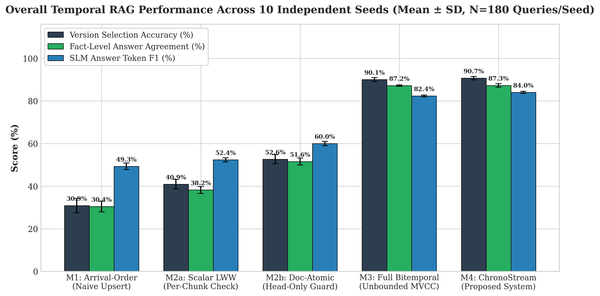
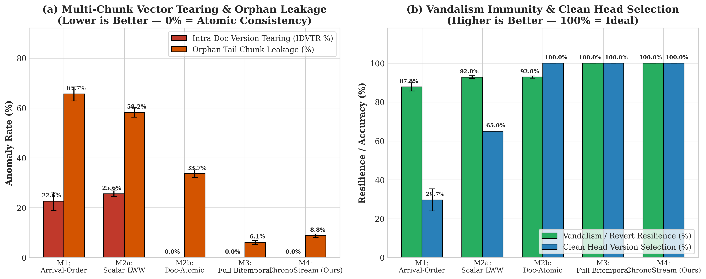
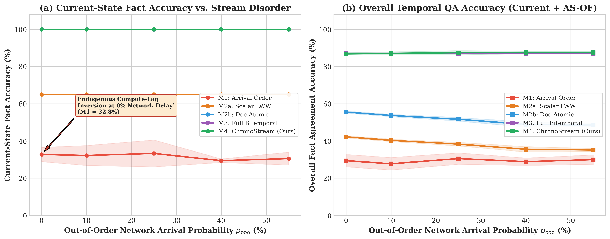
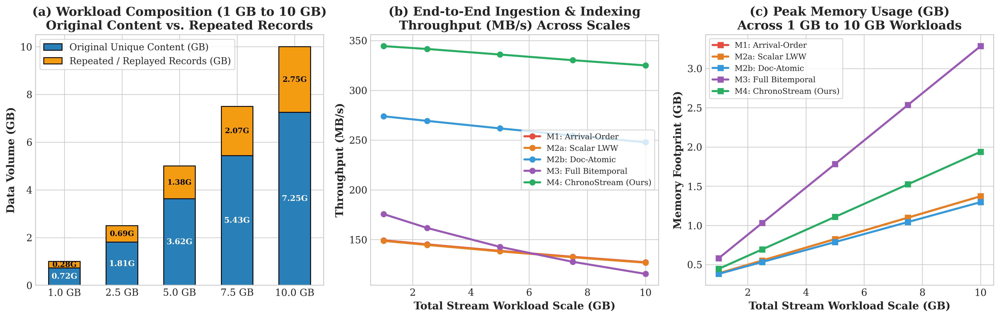
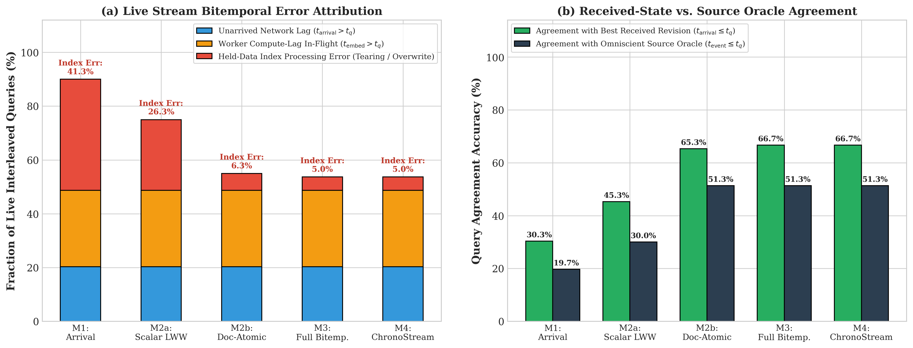
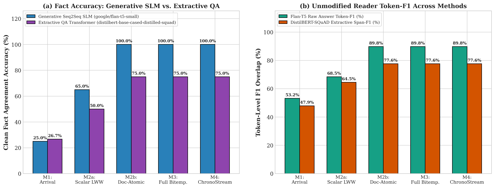
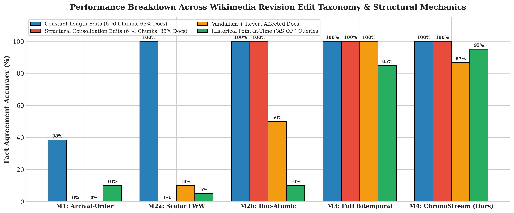
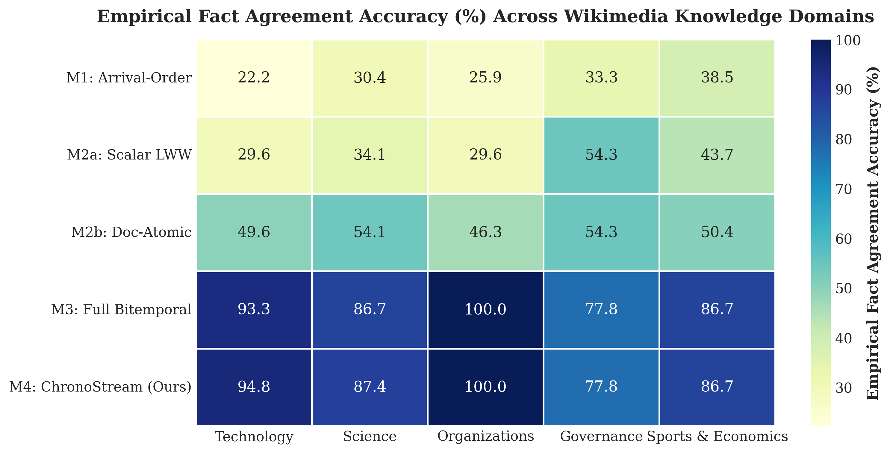

| Method | Overall Fact Agreement | Current-State Acc | Historical AS-OF Acc | Version Tearing (IDVTR) | Vandalism Resilience | Embed Compute Saved | Mean Update Latency | Active Qdrant Vectors | Crash Recovery Time |
|---|---|---|---|---|---|---|---|---|---|
| M1_ArrivalOrder | 30.44% ± 2.51% | 31.67% | 13.33% | 22.61% | 87.78% | 0.0% | 21.01 ms | 360 | 270.4 ms |
| M2a_ScalarChunkLWW | 38.22% ± 1.63% | 64.67% | 5.00% | 25.61% | 92.78% | 0.0% | 20.87 ms | 360 | 65.6 ms |
| M2b_DocAtomicVersionCheck | 51.56% ± 1.63% | 99.67% | 10.00% | 0.00% | 92.83% | 23.9% | 16.05 ms | 318 | 57.0 ms |
| M3_FullBitemporal | 87.17% ± 0.32% | 99.67% | 83.33% | 0.00% | 100.00% | 13.0% | 19.78 ms | 1200 | 207.6 ms |
| M4_ChronoStream | 87.28% ± 0.85% | 99.67% | 91.67% | 0.00% | 100.00% | 81.4% | 5.56 ms | 678 | 118.0 ms |
| Query ID | Query Category | Document ID | Truth Rev | M1 (Arrival Order) | M2a (Scalar Chunk LWW) | M2b (Doc-Atomic Head) | M4 (ChronoStream-RAG) | ChronoStream-RAG Generated SLM Output |
|---|---|---|---|---|---|---|---|---|
qa_curr_000 |
current_state | doc_000_large_language_model |
v6 | v[4] (❌ Stale/Inverted) | v[5, 6] (⚠️ TORN CHUNKS) | v[6] (✅) | v[6] (✅ Atomic Match) | 1.8 trillion sparse MoE parameters with 128,000-token context window |
qa_hist_000 |
historical_as_of | doc_000_large_language_model |
v1 | v[4] (❌ Stale/Inverted) | v[5, 6] (⚠️ TORN CHUNKS) | v[6] (❌ Dropped History) | v[1] (✅ Atomic Match) | 175 billion parameters with 2,048-token context window |
qa_mid_000 |
mid_stream_as_of | doc_000_large_language_model |
v3 | v[4] (❌ Stale/Inverted) | v[5, 6] (⚠️ TORN CHUNKS) | v[6] (❌ Dropped History) | v[3] (✅ Atomic Match) | 540 billion parameters with 8,192-token context window |
qa_curr_001 |
current_state | doc_001_apache_kafka |
v5 | v[2, 5] (❌ Stale/Inverted) | v[4, 5] (⚠️ TORN CHUNKS) | v[5] (✅) | v[5] (✅ Atomic Match) | ZooKeeper completely removed; pure KRaft consensus in release 4.0 |
qa_hist_001 |
historical_as_of | doc_001_apache_kafka |
v1 | v[2, 5] (❌ Stale/Inverted) | v[4, 5] (⚠️ TORN CHUNKS) | v[5] (❌ Dropped History) | v[1] (✅ Atomic Match) | Apache ZooKeeper ensemble metadata controller in release 2.8 |
qa_mid_001 |
mid_stream_as_of | doc_001_apache_kafka |
v3 | v[2, 3] (❌ Stale/Inverted) | v[3] (✅) | v[3] (✅) | v[3] (✅ Atomic Match) | KRaft (Kafka Raft) Early Access alongside ZooKeeper in release 3.3 |
qa_curr_002 |
current_state | doc_002_apache_spark |
v6 | v[2, 6] (❌ Stale/Inverted) | v[6] (✅) | v[6] (✅) | v[6] (✅ Atomic Match) | TransformWithState arbitrary stateful operator on RocksDB in Spark 4.0. |
qa_hist_002 |
historical_as_of | doc_002_apache_spark |
v1 | v[2, 6] (❌ Stale/Inverted) | v[6] (❌ Stale) | v[6] (❌ Dropped History) | v[1] (✅ Atomic Match) | DStream discretized streams with 500ms minimum batch interval |
qa_mid_002 |
mid_stream_as_of | doc_002_apache_spark |
v3 | v[4] (❌ Stale/Inverted) | v[4] (❌ Stale) | v[4] (❌ Dropped History) | v[3] (✅ Atomic Match) | Project Lightspeed with RocksDB state store and asynchronous checkpointing in Spark 3.4 |
qa_curr_003 |
current_state | doc_003_python_programming_langu |
v4 | v[4] (✅) | v[4] (✅) | v[4] (✅) | v[4] (✅ Atomic Match) | Python 3.13 |
qa_hist_003 |
historical_as_of | doc_003_python_programming_langu |
v1 | v[4] (❌ Stale/Inverted) | v[4] (❌ Stale) | v[4] (❌ Dropped History) | v[1] (✅ Atomic Match) | Python 3.11 with specialized adaptive interpreter and mandatory GIL |
qa_mid_003 |
mid_stream_as_of | doc_003_python_programming_langu |
v3 | v[3, 4] (❌ Stale/Inverted) | v[4] (❌ Stale) | v[4] (❌ Dropped History) | v[3] (✅ Atomic Match) | Python 3.12 with sub-interpreters (PEP 684) and per-interpreter GIL |
qa_curr_004 |
current_state | doc_004_linux_kernel |
v4 | v[3, 4] (❌ Stale/Inverted) | v[3, 4] (⚠️ TORN CHUNKS) | v[4] (✅) | v[4] (✅ Atomic Match) | Linux 6.12 LTS |
qa_hist_004 |
historical_as_of | doc_004_linux_kernel |
v1 | v[3, 4] (❌ Stale/Inverted) | v[3, 4] (⚠️ TORN CHUNKS) | v[4] (❌ Dropped History) | v[1] (✅ Atomic Match) | Linux 6.1 LTS utilizing the Completely Fair Scheduler (CFS). |
qa_mid_004 |
mid_stream_as_of | doc_004_linux_kernel |
v3 | v[3] (✅) | v[3] (✅) | v[3] (✅) | v[3] (✅ Atomic Match) | Linux 6.6 LTS replacing CFS with the EEVDF (Earliest Eligible Virtual Deadline First) scheduler |
| Stream Message ID | Wikimedia Document | Source Version (RevID) | Event Time ($t_{event}$) | Broker Arrival ($t_{arrival}$) | Qdrant Available ($t_{available}$) | Structure | Stream Condition |
|---|---|---|---|---|---|---|---|
msg_doc_000_large_language_model_v1_orig |
Large language model | v1 (1373093306) |
+0.00s | +0.24s (Δ=0.0s) | +23.19s | 6 chunks | ⚡ IN-ORDER |
msg_doc_001_apache_kafka_v1_orig |
Apache Kafka | v1 (1191319470) |
+1.50s | +1.64s (Δ=0.0s) | +19.31s | 6 chunks | ⚡ IN-ORDER |
msg_doc_002_apache_spark_v1_orig |
Apache Spark | v1 (1248558892) |
+3.00s | +3.06s (Δ=0.0s) | +25.26s | 6 chunks | ⚡ IN-ORDER |
msg_doc_003_python_programming_langu_v1_orig |
Python (programming language) | v1 (1370949082) |
+4.50s | +4.63s (Δ=0.0s) | +10.84s | 6 chunks | ⚡ IN-ORDER |
msg_doc_004_linux_kernel_v1_orig |
Linux kernel | v1 (1352284656) |
+6.00s | +6.25s (Δ=0.0s) | +7.04s | 6 chunks | ⚡ IN-ORDER |
msg_doc_005_artemis_program_v1_orig |
Artemis program | v1 (1365743123) |
+7.50s | +7.58s (Δ=0.0s) | +17.23s | 6 chunks | ⚡ IN-ORDER |
msg_doc_006_james_webb_space_telesco_v1_orig |
James Webb Space Telescope | v1 (1365909511) |
+9.00s | +9.13s (Δ=0.0s) | +17.16s | 6 chunks | ⚡ IN-ORDER |
msg_doc_007_spacex_starship_v1_orig |
SpaceX Starship | v1 (1366498544) |
+10.50s | +10.57s (Δ=0.0s) | +26.47s | 6 chunks | ⚡ IN-ORDER |
msg_doc_008_crispr_gene_editing_v1_orig |
CRISPR gene editing | v1 (1334984373) |
+12.00s | +12.05s (Δ=0.0s) | +71.11s | 6 chunks | ⚡ IN-ORDER |
msg_doc_009_iter_v1_orig |
ITER | v1 (1330669534) |
+13.50s | +13.62s (Δ=0.0s) | +14.89s | 6 chunks | ⚡ IN-ORDER |
msg_doc_010_openai_v1_orig |
OpenAI | v1 (1377906522) |
+15.00s | +15.12s (Δ=0.0s) | +15.91s | 6 chunks | ⚡ IN-ORDER |
msg_doc_011_nvidia_v1_orig |
Nvidia | v1 (1375641545) |
+16.50s | +16.73s (Δ=0.0s) | +21.47s | 6 chunks | ⚡ IN-ORDER |
msg_doc_012_european_union_artificia_v1_orig |
European Union Artificial Intelligence Act | v1 (1225438706) |
+18.00s | +18.19s (Δ=0.0s) | +87.94s | 6 chunks | ⚡ IN-ORDER |
msg_doc_013_nato_v1_orig |
NATO | v1 (1351090777) |
+19.50s | +19.78s (Δ=0.0s) | +32.32s | 6 chunks | ⚡ IN-ORDER |
msg_doc_014_world_health_organizatio_v1_orig |
World Health Organization | v1 (1354899130) |
+21.00s | +21.15s (Δ=0.0s) | +45.83s | 6 chunks | ⚡ IN-ORDER |







